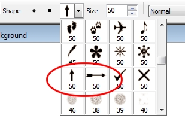
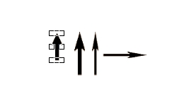
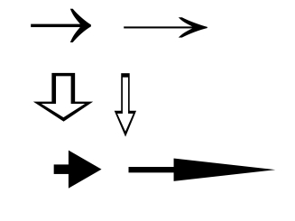

Рисование стрелок -->
Инга / 08.03.2012, 03:17/00:41
Форум:
Если ли простой и быстрый способ рисовать в СРР стрелки с ровными наконечниками? Есть готовые в Image Sprayer под названием Arrows, но они слишком короткие. Хотелось бы знать способ, который бы позволял в СРР быстро рисовать стрелки разной длины с ровными наконечниками.
А что мешает перевести стрелку в "кривые" и вытянуть хвост до нужной длинны?
>А что мешает перевести стрелку в "кривые" и вытянуть хвост до нужной длинны?
Т.е. без связки с CorelDRAW не обойтись?
В CPP можно быстро сделать стрелку?
раз готовые стрелки в ССР короткие, почему бы не добавить хвост самостоятельно из нужной толщины линий?
Инга, а почему именно Image Sprayer? Есть кисти в форме стрелок, в стандартном наборе форм кисти. Сделать эту самую стрелку объектом и все дела. Меняйте потом длину, ширину и наконечник ровный.... Плюс к этому, можно создать стрелку с помощью инструмента Техt (как вариант). Выбираете шрифт Symbol и комбинации: Alt + 0172...0174 создают стрелки. И потом можно тоже трансформировать их форму...
>раз готовые стрелки в ССР короткие, почему бы не добавить хвост самостоятельно из нужной толщины линий?
Я хочу рисовать быстрым способом СВОИ пользовательские стрелки.
>Инга, а почему именно Image Sprayer?
Видимо не достаточно точно описала.
Image Sprayer был приведен как пример того, что уже есть в CPP. Стрелки в Image Sprayer меня не устраивают.
> Есть кисти в форме стрелок,
Напишите, пожалуйста, подробнее по шагам, как нарисовать стрелки?
Это совсем просто :)
1-й способ:
1. В документе открываете докер Objects (Объекты) и внизу нажимаете кнопку New Object (Создать объект).
2. Затем берете инструмент Paint (Кисть) и в списке Nib Shape (Форма кончика) выбираете стрелку (рис. 1)

Щелкаете в документе и стрелка-объект готова.
3. Переключаетесь на инструмент Object Pick (Указатель объектов) и можете менять длину/ширину стрелки (рис. 2)

На рис. 2 одна и та же стрелка, измененная инструментом Object Pick (Указатель объектов).
2-й способ:
1. Переключаетесь на инструмент Text (Текст) и выбираете подходящий шрифт, как я говорил раньше.
2. Выбираете размер шрифта побольше и "пишете стрелку". К сожалению, Photo-Paint не имеет такой функции, как Draw - Вставить символ и вы не увидите весь набор стрелок в шрифте. Но вы можете обратиться за помощью в Draw и посмотреть там нужную стрелку и соответствующую комбинацию клавиш. Пример показан на рис. 3.

На рис. 3 (сверху вниз) показаны стрелки созданные с помощью шрифтов: Symbol (Alt + 0174); Arrows 2 (Alt + 074); Windings 3 (Alt + 0150).
3. Т. к. в Photo-Paint текст - это объект, то переключаетесь на инструмент Object Pick (Указатель объектов) и можете менять длину/ширину стрелки (рис. 3). Слева - исходные стрелки, справа их "модификации".
В не проще ли в DRAW взять готовую стрелку (подкорректировать её если нужно) и через буфер вставить в PP как новый объект? :)
Sancho, во многих случаях проще и я всегда буду повторять, что "сцепка" Draw - Photo-Paint работает отлично. Оба приложения удачно дополняют друг друга. Но топик-стартер хочет это сделать в РР. Почему бы и нет? Каждый сам выбирает, как ему удобней :)
Как увидеть список Nib Shape? У меня его нет СРР Х5.
Страницы